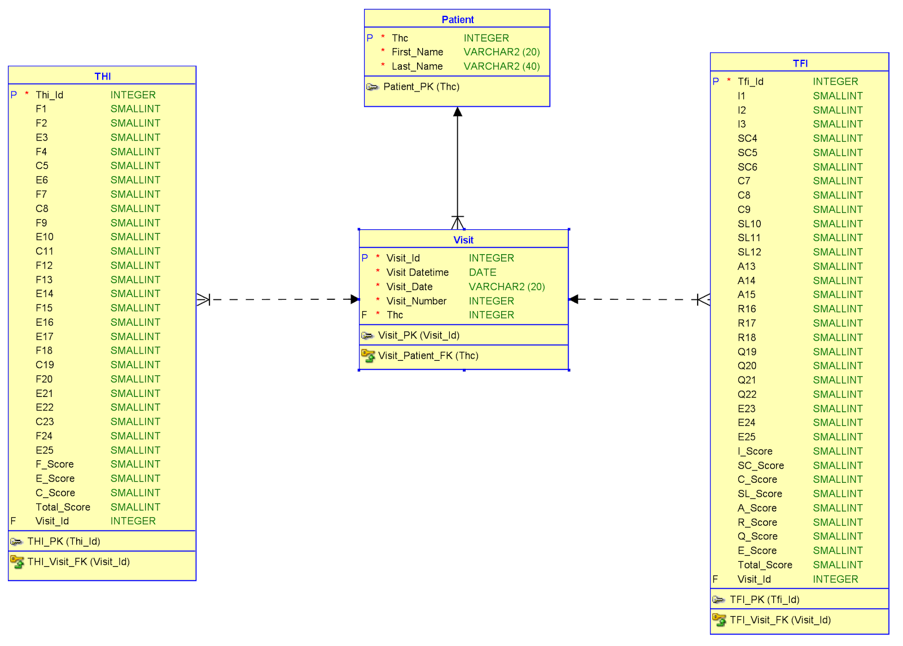
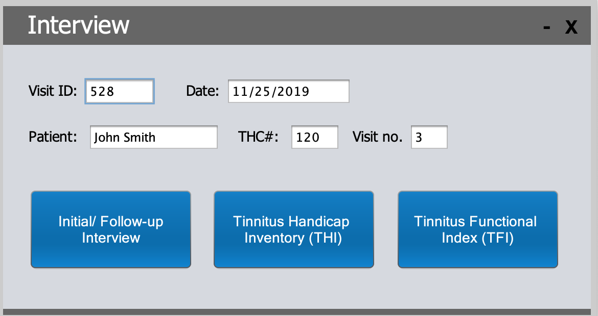

MySQL Project

Description:
A college group project that used Java and MySQL to record information from a questionnaire. It is implemented as a 2-tier Architecture design in which it allows the Java application to talk directly to the data source by using a JDBC driver. MySQL is used to create and populate the tables, as well as query any information needed by the user. The GUI design is implemented using Java swing and it displays an interface for the user to input their information that will be securely stored in the database with the key that they chose.
Achievements:
- Managed a team of 3 to effectively meet deadlines
- Designed and implemented the physical database model using MySQL
- Connected the database with java using a Java Database Connectivity(JDBC) driver
Key Components:
- Java
- JDBC
- MySQL
- Eclipse IDE
- MySQL WorkBench
- Graphical User Interface
Images

